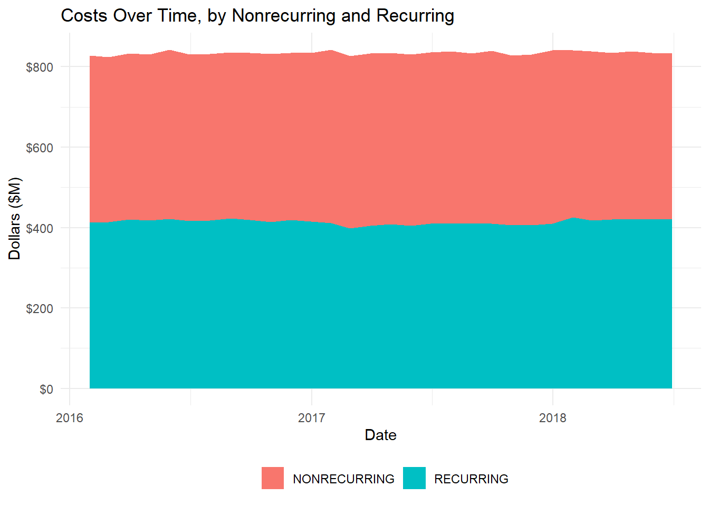
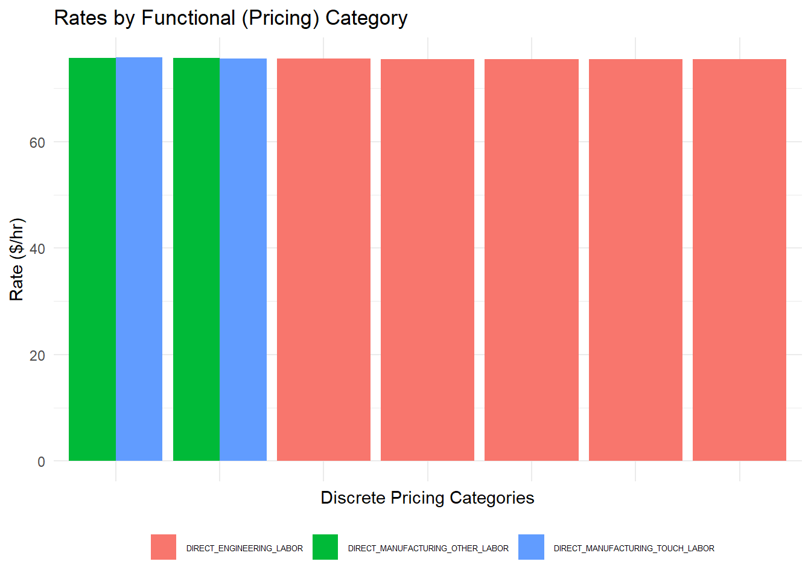

The FlexFile Framework: Preparing for Powerful Analysis in R (ICEAA Paper)
csdrtool-vignette.Rmdlibrary(readflexfile)
Abstract
The Cost and Hour Report (“FlexFile”) is a new Contractor Cost Data Reporting (CCDR) format that promises to change the world of Department of Defense (DoD) cost analysis by delivering significantly more granular cost and hour data than its predecessor, the DD 1921 series of reports. The volume of the FlexFile requires a more thoughtful approach to importing, wrangling, transforming, and ultimately communicating data than Microsoft Excel (Excel) may offer. This paper introduces the R package csdrtools that helps the analyst exploit the FlexFile to its fullest extent.
Acknowledgements
The authors would like to acknowledge the following individuals:
Adam James (Technomics, Inc.) provided technical guidance in the development of csdrtools.
Marc Stephenson (Technomics, Inc.) is the contractor lead for the OSD CAPE FlexFile initiative, and served as a valuable resource for many FlexFile-specific matters.
Dan Germony (Cost & Systems Analysis Office, USA TACOM LCMC) has championed the use of R in the cost community, and has developed tools for working with DD 1921 reports.
Introduction
The cost estimating and analysis (Cost) profession and the value of its advice to decision makers is largely dependent on the cost, technical, and programmatic data that underlie analyses. The most common tools that the profession uses to organize and manipulate data are Excel and Excel add-ins. The appeal of Excel is obvious. Every government and industry workstation is Excel-equipped, it is easy to use and, with the right amount of practice, it is possible to become a self-taught power-user capable of exploiting Excel’s full potential. Unfortunately, the downside of Excel is becoming increasingly obvious to even the most advanced users. Some of the core problems are summarized below.
Lack of consistency. Excel offers extreme flexibility. This necessarily means that the workbook is only as organized as the creator’s thoughts. The outcome can range from a very well organized workflow to an incomprehensible one.
Lack of object language. Excel has a weak (at best) object language. This means that workbooks are customized to every problem. Reusing analysis becomes very difficult, if not impossible.
Lack of statistical features. Excel is not a statistical platform. Model (e.g., CER) development is limited to basic factors and linear regression (with even the latter not performed to satisfaction without custom add-ins).
Lack of scalability. Excel struggles with large, diverse data. Complex data sets of the present and the future (e.g., FlexFile, O&S datasets) will simply not fit in Excel.
Lack of graphical features. Excel graphics are custom made for each application. It is hard (but not impossible) to reuse a stock graphic for alternative datasets. In addition, graphics are static and lack visual appeal.
Fixed state. Excel models exist in a singular state. For example, a single cell can only have one value. A user cannot allow vector inputs without the help of an outside tool (e.g., Crystal Ball and other tools to support a Monte Carlo use case).
Some of these issues can be mitigated by extensive training in data analytics, Excel, and workflow development. Others are impossible for even the expert user. Cost must adopt new tools and techniques to turn large, complex datasets into actionable information for analysts and decision makers.
We present an alternative approach to handling cost data, specifically CCDRs. This paper describes that alternative – the csdrtools package within R, an existing open source data analytics framework.
As the first adopters of the FlexFile, we rely on tools such as R. Soon, the cost community will, too. We strongly believe that the community will not only benefit from, but in fact rely upon packages such as csdrtools as it transitions into an age of bigger and more complex datasets.
The FlexFile and Quantity Data Report
CCDRs, a subset of Cost and Software Data Reports (CSDRs), are the standard for actual cost and hour data collection for Major Defense Acquisition Programs (MDAPs). Over the past three decades, cost reporting formats in the defense sector have remained largely unchanged. However, in May, 2019, the Defense community replaced the DD 1921 series with the FlexFile and Quantity Data Report for all new contracts with CSDR reporting requirements.1
- Dollars and hours tagged to an Account. This is intended to be the level (e.g., work package, control account, charge code) at which the contract subject to the cost reporting requirement incurs costs.
- A time-phased reporting period
- Reporting by CLIN
- The reporting company’s Functional Categories and Functional Overhead Categories, which align with their internal pricing categories.
What R We Talking About?
R was developed as a purpose-built statistical analysis tool. As a result, its foundational, base capabilities are rooted in data manipulation and statistical methods. However, the true power of R is its extensive library of packages curated and maintained in the Comprehensive R Archive Network (CRAN).2
R was originally used solely by statisticians to solve fairly specific problems. In the mid-2000s, personal computing power exploded, signaling the arrival of the Data Age. This led to the rapid adoption and the mainstream use of R by a new user base – the “data scientist”.
In the early years, packages evolved quickly and users frequently changed how they did things. In the early 2010s, a certain user base started to evolve and superstar developers began to consolidate and define the standard packages and workflows for an efficient, effective, and scalable data science work stream. Almost more importantly, they stabilized the “wild west” culture and introduced a standard approach to a macro set of problems.
Today, a large amount of work is being led and funded by the private company RStudio.3 Their namesake product is the standard integrated design environment (IDE) for R users. They also have designed, developed, and are maintaining a robust collection of packages known as the “tidyverse”.4 In some circles, the tidyverse has become so popular that it is almost synonymous to R itself. Many data science courses teach solely from this framework. The tidyverse is the creation of RStudio’s Chief Scientist Hadley Wickham and his team.5 It is, in Wickham’s words, “a collection of R packages that share a high-level design philosophy and low-level grammar and data structures.”6
The tidyverse has changed the way many R users operate. The packages are both lightning quick and user friendly. They include the standards for data graphics (ggplot2, RShiny), data wrangling (dplyr, tidyr, tibble), custom package development (devtools, testthis), and workflow development and documentation (rmarkdown and RStudio). Additionally, they are developing and maturing frameworks for topics such as machine learning (tidymodels).
The general tidyverse workflow is demonstrated below7:

tidyverse/data science workflow
csdrtools
The tidyverse provides a general framework for efficiently working with data. However, there are still repetitive and tedious tasks that must be performed when working with a custom data format such as the FlexFile.
To achieve this, we’ve created an R package, csdrtools, which handles the tasks of importing, tidying, transforming, and visualizing the FlexFile. csdrtools contain the following core functions:
- The
read_ff()andread_folder()functions import the FlexFile. - The
stack_ff(),add_id_col(), andlistindex_to_col()functions help tidy the FlexFile. - The
flatten_ff()function transforms the FlexFile by joining the up to 20 tables of cost, hour, and metadata information into one. Thetable_*()functions produce summary tables. - The
plot_ff()andsankey_ff()functions visualize the FlexFile with pre-built graphics.
The csdrtools package is built under the tidyverse philosophy. Functions are intended to be strung together with the pipe (%>%) operator. This represents a powerful benefit of the tidyverse. Pipes allow the analyst to clearly express a sequence of multiple operations, in which the output of the prior operation is fed into the input of the next operation. The functions within csdrtools support this capability.
The csdrtools package is also designed to interact with other tidyverse packages, such as dplyr. The dplyr package is the tidyverse standard for data manipulation, such as filtering and subsetting data, and transforming variables. This will be discussed in more detail in section 1.6.2: Tidy.
The FlexFile provides significantly more granular data than the DD 1921 reports. There does not exist a tool to interact with the entirety of the FlexFile. This is especially apparent when working with multiple FlexFiles.
The csdrtools package solves this problem. This package was not developed as a “science project”, but as a need-driven solution to eliminate the barrier to entry for using the FlexFile.
The following sections describe each function within csdrtools in more detail. This information is also contained in each function’s help file.8
Import
The FlexFile Data Exchange Instructions defines the standard format of the FlexFile as a collection of tables.9 These tables are stored as JavaScript Object Notation (JSON) files in a compressed archive (.zip).
JSON is intended to be a machine-readable format. Excel is able to open such files, but the process is a bit complex. CADE provides several exports that convert JSON to an Excel flat file. This is helpful because it provides a dataset with which to work. However, JSON remains the rawest format of the data. In order to work with the file directly, you will need to use another tool.
R has a number of functions available to import data, typically prefixed with the word “read” (e.g., read_csv(), read_excel(), read_json()). Sticking with this convention, csdrtools provides read_ff() and read_folder() to read the FlexFile data into R.
read_ff()
The read_ff() function loads a given FlexFile (.zip) into R. The function returns a list of data frames – one for each JSON file.
Usage and Arguments
read_ff(file, .clean_names = TRUE)
-
file: Path to a FlexFile .zip archive. -
.clean_names: Logical whether to clean the names usingclean_names()or not. IfTRUE, all column names will be converted to lower snake case (i.e.,account_id). This follows the tidyverse style guide. IfFALSE, column names are kept in the default upper camel case (i.e.,AccountID). This follows the FlexFile data model format.
Example
Minimal code is required to run this function and store the data as list aircraft_ff:
# Load the csdrtools package library(readflexfile) # Read an example from the package file <- system.file("extdata", "Sample File_FF.zip", package = "readflexfile") # Read in the example FlexFile aircraft_ff <- readflexfile::read_ff(file = file, .clean_names = T) #> Loading required namespace: jsonlite
The function names() provides an overview of the data frames within this list. Each data frame contains the data of its respective JSON file in the native FlexFile.
names(aircraft_ff) #> [1] "filetype" "reportconfiguration" #> [3] "reportmetadata" "ordersorlots" #> [5] "clins" "enditems" #> [7] "wbs" "accounts" #> [9] "functionalcategories" "functionaloverheadcategories" #> [11] "unitsorsublots" "reportingcalendar" #> [13] "summarycostdata" "actualcosthourdata" #> [15] "forecastatcompletioncosthourdata" "summaryremarks" #> [17] "wbselementremarks" "wbsdictionarydefinitions" #> [19] "costhourtagdefinitions"
read_folder()
Loading multiple FlexFiles into one list enables comparing or aggregating multiple contracts, contractors, programs, and commodities. The function read_folder() loads all FlexFiles (.zip) within a folder into R.
Usage and Arguments
read_folder(folder, read_function, .clean_file_names = TRUE, .id = NULL, ...)
-
folder: Path to a folder of FlexFiles (.zip) archive. -
read_function: The function to use to read each file.read_ff()will be used in most cases in this paper. -
.clean_file_names = TRUE: Logical to clean names into lower snake case or not. -
id: Optionally add an ID variable to each file table as this name. This allows an analyst to break out data discretely by FlexFile.
Example
Much like read_ff(), minimal code is required to read in a folder of FlexFile submissions. This example reads in a folder of two FlexFiles into R.
folder <- system.file("extdata/multiple-flexfiles", package = "readflexfile") flexfiles <- read_folder(folder, read_function = readflexfile::read_ff) class(flexfiles) #> [1] "list" length(flexfiles) #> [1] 2
The list flexfile contains two separate lists – one for each zipped FlexFile located within the folder. The read_folder() function applied the read_ff() function to every (.zip) in the folder location. Each of the lists contain identically structured data frames, with unique data respective to the individual FlexFiles.
With the data now in the R environment, organizing the dataset (“tidying”, in tidyverse speak) will help format the FlexFile into a more useable structure.
Tidy
Data tidying entails structuring datasets to facilitate analysis. Wickham defines data tidying as: “A standard way to organize data values within a dataset. A standard makes initial data cleaning easier because you don’t need to start from scratch and reinvent the wheel every time.”10
James, Cherwonik, and Bryant (ICEAA 2019) discuss common “tidy” data principals in the context of Cost.11 They include:
- Logically structuring tables (i.e., deciding if dollars and hours should be in one column, or two)
- Consistently naming variables
- Organizing WBS elements to order correctly and properly roll up to parent elements
Tidy data is designed around the third normal form of data base normalization. The FlexFile is designed as a collection of database tables. Both tidy data and the FlexFile were designed under the same normalization principals. Due to their similar design philosophies, some further tidying functions can be applied to the FlexFile to enhance its structure for analysis.
stack_ff()
The read_folder() function creates a list of lists – one for each FlexFile. In order to create a singular data frame containing multiple FlexFiles, one must unpack these lists into one list of stacked data frames. The function stack_ff() takes care of this.
Examples
The output of this function is a singular list containing one data frame for each data table in the FlexFile. For example, the actualcosthourdata data frame stacks the records from each loaded FlexFile. The doc_id column, created in the listindex_to_col() function, identifies which FlexFile a specific record is from.
Because the output of read_folder() and listindex_to_col() is simply a list, we can pipe together these two functions and stack_ff() in one efficient snippet of code:
ff_stack <- flexfiles %>% listindex_to_col() %>% readflexfile::stack_ff() # ff_stack is a list of 15 data frames. class(ff_stack) #> [1] "list" length(ff_stack) #> [1] 19
In this case, we did not need to define a list as an argument in the stack_ff() function because it is piped directly in to it from the output of read_ff() and optional listindex_to_col() functions.
listindex_to_col()
The optional function listindex_to_col() adds the list index from the first list of a list of data frames as an ID column in each of the nested data frames. This provides a unique ID for each FlexFile in a list of stacked data frames containing multiple FlexFiles. More descriptive unique identifiers, such as contractor or program name, are added through the flatten_ff() function, as described in the section 1.6.3: Transform.
Usage and Arguments
listindex_to_col(.nestedlist, var = "listid")
-
.nestedlist: A nested list of data frames -
var = "listid": Character name of which to name the ID column. The default islistid.
Examples
Applying listindex_to_col() to the list of FlexFiles (“flexfiles”) adds a column, doc_id, to each table with the list index of each FlexFile.
flexfiles <- flexfiles %>% listindex_to_col(var = "doc_id") # "doc_id" == 1 added to each table in the first indexed list. flexfiles[[1]]$enditems #> # A tibble: 2 x 3 #> doc_id id name #> <int> <chr> <chr> #> 1 1 Var-A Variant A #> 2 1 Var-B Variant B
Transform
Data transformation involves creating new variables from existing ones, reorganizing columns in a more logical manner, and joining together previously separate tables. The FlexFile requires a certain amount of data transformation due to its relational structure. Often a single flat table is easier to work with. The flatten_ff() function does this, joining names and IDs, and pulling in metadata (e.g., the program name or the contract number) to form one data frame for analysis.
flatten_ff()
The function flatten_ff() transforms the imported FlexFile list object into one data frame.
Specifically, the FlexFile contains the actualcosthourdata table with dollars and hours tagged to various IDs. The names corresponding to these IDs are found within the various ID tables. For example, the account_id column in the actualcosthourdata table ties to the id column in the accounts table. Each ID represents a plain English name that should replace the id in the actualcosthourdata table.
To create this large data frame, flatten() does the following:
Joins IDs from the
actualcosthourdataandforecastatcompletioncosthourdatato names in its corresponding lookup tables.Stacks the
actualcosthourdataand theforecastatcompletioncosthourdatato create a table of all costs and hours. Creates a new column,atd_or_fac, to indicate if a specific record is incurred (“ATD”) or forecasted (“FAC”).Normalizes the standard category field.
Completing the above three tasks in Excel requires a substantial amount of time, including:
Writing “vlookups” to join each ID column with its respective name column.
Manually appending one table to another, while ensuring columns are ordered identically.
Developing a mapping table between the standard category fields, and normalizing them with “vlookups”.
Doing this for every FlexFile is a significant resource strain. The flatten_ff() function, and csdrtools more generally, provides an instant, repeatable solution to these tasks. This saves time organizing data, and provides more for analysis.
Examples
ff_flat <- flexfiles %>% readflexfile::stack_ff() %>% readflexfile::flatten_ff()
Like the other functions, flatten_ff() is pipeable – it takes the output of stack_ff() (a list of FlexFiles), and uses that as its only argument. The outputs of read_folder() and stack_ff() were lists. The output of flatten_ff() is a data frame. Note how flatten_ff() also replaced all IDs with their corresponding names.
library(dplyr) #> #> Attaching package: 'dplyr' #> The following objects are masked from 'package:stats': #> #> filter, lag #> The following objects are masked from 'package:base': #> #> intersect, setdiff, setequal, union ff_flat_accounts <- ff_flat %>% select(doc_id, account_name, value_dollars, value_hours) head(ff_flat_accounts) #> # A tibble: 6 x 4 #> doc_id account_name value_dollars value_hours #> <int> <chr> <dbl> <int> #> 1 1 Account FKWF-QPRF-FTNL 9519 118 #> 2 1 Account FKWF-QPRF-FTNL 12730 188 #> 3 1 Account FKWF-QPRF-FTNL 12661 161 #> 4 1 Account FKWF-QPRF-FTNL 9517 116 #> 5 1 Account FKWF-QPRF-FTNL 10708 140 #> 6 1 Account FKWF-QPRF-FTNL 9845 135
We now have a data frame to work with. The tbl_*() functions use this data frame to create a number of summary tables for streamlined analysis.
tbl_*() family of functions
Many different summaries of the FlexFile can be produced – each with their own purpose. Examples include pivoting costs to create separate columns for recurring and nonrecurring, or actuals and forecasts. This may also entail filtering the data to include only specific dates, or only the CLINs or accounts that are the highest cost drivers. These quick yet effective transformations are the purpose of the tbl_*() group of functions.
The FlexFile is a departure from the familiar DD 1921 and 1921-1 report formats. The tbl_1921() and tbl_1921_1() functions recreate these reports directly from the flattened FlexFile data frame. In addition, tbl_direct_rates() calculates direct labor rates for the standard categories found on the DD 1921-1 report.
Other functions leverage the added fields of the FlexFile.
-
tbl_top_n_clins()andtbl_top_n_accounts()identify the largest accounts and CLINs. -
tbl_wbs_by_date()phases WBS level costs by the FlexFile’s reporting periods. -
tbl_wbs_by_account()creates a report similar to the DD 1921 with insight down to the account level.
Usage and Arguments
tbl_1921(flattened_ff, value = c("Dollars", "Hours"))tbl_1921_1(flattened_ff, value = c("Dollars", "Hours"))tbl_direct_rates(flattened_ff)tbl_wbs_by_date(flattened_ff, timeframe = c("Year", "Month"))tbl_top_n_accounts(flattened_ff, n = 10)tbl_top_n_clins(flattened_ff, n = 10)
Where,
-
flattened_ffis a flattened FlexFile created from the flatten_ff() function. -
valueselects either “Dollars” or “Hours” to summarize in the data frame. -
timeframeselects either “Year” or “Month” to summarize the actual dollars by in the data frame. -
nis an integer for the top n values to select.
Examples
tbl_1921() and tbl_1921_1()
Here, we’ve created the DD 1921 report, filtering to only the actuals incurred to date, and printing the first six WBS elements.
library(ezflexfile) DD_1921 <- tbl_1921(ff_flat, value = "Dollars") DD_1921_actuals <- DD_1921 %>% dplyr::select(wbs_element_id, wbs_name, ATD_NONRECURRING, ATD_RECURRING) head(DD_1921_actuals) #> # A tibble: 6 x 4 #> # Groups: wbs_element_id, wbs_name [6] #> wbs_element_id wbs_name ATD_NONRECURRING ATD_RECURRING #> <chr> <chr> <dbl> <dbl> #> 1 1.0 TOTAL NA NA #> 2 1.1 Subsystem 1.1 NA NA #> 3 1.1.1 Subsystem 1.1.1 88169798 86562542 #> 4 1.1.2 Subsystem 1.1.2 201514720 204236354 #> 5 1.1.3 Subsystem 1.1.3 584810456 588042224 #> 6 1.1.4 Subsystem 1.1.4 NA NA
The tbl_1921() and tbl_1921_1() functions provide some flexibility while maintaining the core structure of the DD 1921 and 1921-1 reports. In this example, we’ve elected to print hours. Using functions from dplyr, such as select(), we can further manipulate the table to only include the forecasts columns.
DD_1921_1 <- tbl_1921_1(ff_flat, value = "Dollars") DD_1921_1_actuals <- DD_1921_1 %>% dplyr::select(standard_category_id, FAC_NONRECURRING, FAC_RECURRING) head(DD_1921_1_actuals) #> # A tibble: 6 x 3 #> # Groups: standard_category_id [6] #> standard_category_id FAC_NONRECURRING FAC_RECURRING #> <chr> <dbl> <dbl> #> 1 DIRECT_ENGINEERING_LABOR 72424094360 72685856544 #> 2 DIRECT_MAINTENANCE_OTHER_LABOR 0 0 #> 3 DIRECT_MAINTENANCE_TOUCH_LABOR 0 0 #> 4 DIRECT_MANUFACTURING_OTHER_LABOR 14594093674 14621662988 #> 5 DIRECT_MANUFACTURING_TOUCH_LABOR 14375471840 14452753742 #> 6 DIRECT_MATERIALS 14484882484 14537109470
tbl_direct_rates() and tbl_wbs_by_account()
The relationship between standard category and functional category, as well as WBS element and account, are of interest when analyzing the FlexFile. These provide insight into how a contractor is mapping their internal pricing categories and work packages to the standard elements on the DD 1921 and 1921-1 reports. The tbl_direct_rates() and tbl_wbs_by_account() functions provide these mappings.
head(tbl_direct_rates(ff_flat)) %>% dplyr::select(standard_category_id, functional_category_name, direct_rate) #> # A tibble: 6 x 3 #> # Groups: standard_category_id [2] #> standard_category_id functional_category_name direct_rate #> <chr> <chr> <dbl> #> 1 DIRECT_ENGINEERING_LABOR Direct Engineering Labor (1) 74.9 #> 2 DIRECT_ENGINEERING_LABOR Direct Engineering Labor (2) 75.1 #> 3 DIRECT_ENGINEERING_LABOR Direct Engineering Labor (3) 75.1 #> 4 DIRECT_ENGINEERING_LABOR Direct Engineering Labor (4) 74.9 #> 5 DIRECT_ENGINEERING_LABOR Direct Engineering Labor (5) 75.1 #> 6 DIRECT_MANUFACTURING_TOUCH_L~ Direct Manufacturing Operations Lab~ 75.3
Both are called in largely the same manner.
head(tbl_wbs_by_account(ff_flat)) %>% dplyr::select(wbs_name, account_name, value_dollars) #> Adding missing grouping variables: `wbs_element_id` #> # A tibble: 6 x 4 #> # Groups: wbs_element_id, wbs_name [2] #> wbs_element_id wbs_name account_name value_dollars #> <chr> <chr> <chr> <dbl> #> 1 1.1.1 Subsystem 1.1.1 Account FBQR-VVSQ-QLHV 50968602 #> 2 1.1.1 Subsystem 1.1.1 Account FKWF-QPRF-FTNL 20918240 #> 3 1.1.1 Subsystem 1.1.1 Account PRLB-DWKY-YXKD 42820944 #> 4 1.1.1 Subsystem 1.1.1 Account PYNS-DRBR-SJZZ 27222254 #> 5 1.1.1 Subsystem 1.1.1 Account YHQB-ZTBM-JJJW 32802300 #> 6 1.1.2 Subsystem 1.1.2 Account BVVK-JVDR-XLDJ 113575528
tbl_wbs_by_date()
The FlexFile is time-phased. This is an advantage over the DD 1921 reports, which represented only a snapshot from a point in time. Function tbl_wbs_by_date() details WBS element expenditures over the report’s reporting periods. The resulting table can be viewed at either an annual or monthly level.
head(tbl_wbs_by_date(ff_flat, timeframe = "Year")) #> # A tibble: 6 x 5 #> # Groups: wbs_element_id, wbs_name [6] #> wbs_element_id wbs_name `2016` `2017` `2018` #> <chr> <chr> <dbl> <dbl> <dbl> #> 1 1.1.1 Subsystem 1.1.1 69452828 70336840 34942672 #> 2 1.1.2 Subsystem 1.1.2 162343872 162234444 81172758 #> 3 1.1.3 Subsystem 1.1.3 468738294 467484234 236630152 #> 4 1.1.4.1 Subsystem 1.1.4.1 3643693012 3654680346 1820086772 #> 5 1.1.4.2 Subsystem 1.1.4.2 5708007578 5729766792 2859932652 #> 6 1.1.4.3 Subsystem 1.1.4.3 71820950 71906616 35608888
tbl_top_n_accounts and tbl_top_n_clins
These two functions identify accounts and CLINs that drive costs. One can specify the number of rows it filters, with 10 as the default. In this example, we leverage the scales package to apply formatting to the dollars, hours, and percentages.
library(scales) top_five <- tbl_top_n_accounts(ff_flat, n = 5) #Reformat values to dollars, integers, and percentages top_five <- top_five %>% mutate(value_dollars = dollar(value_dollars), value_hours = comma(value_hours), dollars_pct = percent(dollars_pct)) top_five #> # A tibble: 5 x 4 #> account_name value_dollars value_hours dollars_pct #> <chr> <chr> <chr> <chr> #> 1 Account SKHY-YQQC-PHGJ $3,935,275,884 <NA> 7.86% #> 2 Account YWVH-NYZG-NQHY $2,926,011,772 <NA> 5.84% #> 3 Account DLFK-BQFH-CHPD $2,730,289,162 <NA> 5.45% #> 4 Account RHZG-XBBJ-VYLL $2,397,022,944 <NA> 4.79% #> 5 Account HPVK-XRSY-FTXW $2,309,107,260 <NA> 4.61%
The design philosophy of csdrtools enabled the functions to interact nicely with tidyverse packages. In this example, they also work with packages outside of the tidyverse. For example, we can present a stylized version of the data frame by throwing it into the pander package with minimal additional code. This reformats the data from a data frame (useful for data analysis) to a formatted table (useful for presentation and decision making). The table printed below is the same data as the data frame printed above, but easier on the eyes.
library(kableExtra) kable(top_five) %>% kable_styling()
| account_name | value_dollars | value_hours | dollars_pct |
|---|---|---|---|
| Account SKHY-YQQC-PHGJ | $3,935,275,884 | NA | 7.86% |
| Account YWVH-NYZG-NQHY | $2,926,011,772 | NA | 5.84% |
| Account DLFK-BQFH-CHPD | $2,730,289,162 | NA | 5.45% |
| Account RHZG-XBBJ-VYLL | $2,397,022,944 | NA | 4.79% |
| Account HPVK-XRSY-FTXW | $2,309,107,260 | NA | 4.61% |
These functions allow the user to efficiently reorganize the data set from a large flat file to useful summary tables. Sometimes, it is helpful to plot the data, as well. We can do this with the plot_ff() functions.
Visualize
Well-conceived visualizations serve many purposes in Cost. Hierarchical relationships, trend analysis, and comparative visuals help an analyst better understand the data set, and communicate the data set to decision makers. The csdrtools package contains two primary plotting functions. The plot_ff() function returns two different area charts and one bar chart. The sankey_ff() function returns a Sankey diagram, useful for visualizing relationships. The following sections describe these two functions.
plot_ff()
The plot_ff() function delivers a set of visualizations of the FlexFile. The function returns different graphics based on the arguments described below.
Usage and Arguments
file: Data frame of a flattened FlexFile.-
Type: A numeric value representing the visual to print.-
Type = 1: Stacked area chart of incurred costs over time, by recurring and nonrecurring. -
Type = 2: Stacked area chart of incurred costs over time, by WBS element ID. -
Type = 3: Bar chart of labor rates by functional category.
-
plot_ff(type = 1)
Time-phased dollars and hours are an important aspect of the FlexFile. A natural way to view time phasing is through an area (or sand) chart, where the x-axis represents the date costs are incurred and the y-value depicts those costs. plot_ff(type = 1) presents costs over time, colored by nonrecurring (NR) or recurring (R) effort. This helps readily distinguish the ratio of NR to R costs.
ff_flat %>% plot_ff(type = 1) #> Warning: Removed 2 rows containing missing values (position_stack).

plot_ff(type = 2)
The plot_ff(type = 2) function uses the same structure as plot_ff(type = 1), but instead breaks the colors out by WBS element ID. This demonstrates, for example, cost growth for certain elements at specific points throughout a contract lifecycle. In this example, we’ve filtered down to select aircraft hardware elements: the wing and the nacelle.
ff_flat_hardware <- ff_flat %>% filter(stringr::str_detect(wbs_name, 'Subsystem 1.1.5.3') | stringr::str_detect(wbs_name, 'Subsystem 1.1.4.5') ) ff_flat_hardware %>% plot_ff(type = 2)

plot_ff(type = 3)
The functional category field in the FlexFile lends insight into contractor’s internal direct and overhead pricing categories. The plot_ff(type = 3) function offers a bar chart of these direct pricing rates, ordered from highest to lowest and colored by the standard categories that they map to.
ff_flat %>% plot_ff(type = 3)

sankey_ff
Sankey diagrams display flows from one variable (node) to another. The FlexFile includes dollars and hours tagged to both contractor-native tags (e.g., pricing categories, CLINs, accounts), as well as government-defined categories (e.g., standard category, WBS element). Insight into the mapping between industry and government categories is a unique benefit of the FlexFile. A Sankey diagram can effectively illustrate these relationships.
Usage and Arguments
file: Data frame of a flattened FlexFile.-
Type: A numeric value representing the different pre-canned visuals.-
Type = 1: Visualizes the flow of cost from contractor category to functional category. -
Type = 2: Visualizes the flow of cost from account to WBS element.
-
sankey_ff(type = 1)
The sankey_ff(type = 1) function illustrates the flow of costs from the standard functional categories (the government-defined categories in the DD 1921-1 and 1921-5 reports) to the contractor’s functional categories (intended to align with internal pricing categories). This example demonstrates this relationship for the direct and overhead engineering labor categories.
ff_flat_engineering <- ff_flat %>% filter(stringr::str_detect(standard_category_id, 'ENGINEERING')) ff_flat_engineering %>% sankey_ff(type = 1) #> Warning: 'layout' objects don't have these attributes: 'fonot' #> Valid attributes include: #> 'font', 'title', 'uniformtext', 'autosize', 'width', 'height', 'margin', 'paper_bgcolor', 'plot_bgcolor', 'separators', 'hidesources', 'showlegend', 'colorway', 'datarevision', 'uirevision', 'editrevision', 'selectionrevision', 'template', 'modebar', 'meta', 'transition', '_deprecated', 'clickmode', 'dragmode', 'hovermode', 'hoverdistance', 'spikedistance', 'hoverlabel', 'selectdirection', 'grid', 'calendar', 'xaxis', 'yaxis', 'ternary', 'scene', 'geo', 'mapbox', 'polar', 'radialaxis', 'angularaxis', 'direction', 'orientation', 'editType', 'legend', 'annotations', 'shapes', 'images', 'updatemenus', 'sliders', 'colorscale', 'coloraxis', 'metasrc', 'barmode', 'bargap', 'mapType'
sankey_ff(type = 2)
The sankey_ff(type = 2) function outputs the same plot as sankey_ff(type = 1), but for the account to WBS element relationship. Filtering to one WBS element, in this case WBS #1.1.2 (Engine/Propulsion), the accounts that map to this element are visualized from highest to lowest cost, denoted by the size of the node. When outputted in R, this visual leverages an interactive “tool-tip” that displays costs and relationship details as one hovers over the diagram.
ff_flat_engine <- ff_flat %>% filter(stringr::str_detect(wbs_name, 'Subsystem 1.1.5.3')) ff_flat_engine %>% sankey_ff(type = 2) #> Warning: 'layout' objects don't have these attributes: 'fonot' #> Valid attributes include: #> 'font', 'title', 'uniformtext', 'autosize', 'width', 'height', 'margin', 'paper_bgcolor', 'plot_bgcolor', 'separators', 'hidesources', 'showlegend', 'colorway', 'datarevision', 'uirevision', 'editrevision', 'selectionrevision', 'template', 'modebar', 'meta', 'transition', '_deprecated', 'clickmode', 'dragmode', 'hovermode', 'hoverdistance', 'spikedistance', 'hoverlabel', 'selectdirection', 'grid', 'calendar', 'xaxis', 'yaxis', 'ternary', 'scene', 'geo', 'mapbox', 'polar', 'radialaxis', 'angularaxis', 'direction', 'orientation', 'editType', 'legend', 'annotations', 'shapes', 'images', 'updatemenus', 'sliders', 'colorscale', 'coloraxis', 'metasrc', 'barmode', 'bargap', 'mapType'
Conclusion
The csdrtools package provides a set of functions that serve as building blocks for powerful analysis of the FlexFile in R. Each step in the process outlined above – import, tidy, transform – is necessary before any analysis or visualization is possible.
R provides the necessary environment for csdrtools. By developing the functions outlined in this paper, we have created an instantly scalable and repeatable process, capable of processing one FlexFile, or 100. This is simply not possible with Excel. Therefore, as the cost community transitions into the big data age, it is necessary that capabilities such as csdrtools exist and are adopted.
More generally, R will continue to provide a framework to the cost community that is:
- Consistent. Scripts and functions are linear and largely read from top to bottom. Even poorly documented scripts can be followed.
- Object oriented. Data frames, functions, and many data types can be stored as objects. This creates an environment which minimizes rework, and reusing scripts is straightforward.
- Scalable. R handles all sorts of data sets, from simple .csv files to a relational structure such as the FlexFile JSON model.
- Fully customizable. Visualization packages such as ggplot2 and plotly support grammars of graphic to create beautiful plots.
- Dynamic. R objects can hold vector inputs, unlike Excel in which one value is limited to each cell.
The FlexFile in its current state is difficult to use within Excel. The growing user base of tools such as R within the cost community is a critical enabler to using larger data sources. As the use of the FlexFile grows, so too will the need for a solution to provide faster, more accurate, and more insightful analysis. csdrtools provides this solution.
The FlexFile is still largely in its infancy, with only a portion of programs submitting their first FlexFiles to CADE. We envision the csdrtools package evolving with the FlexFile. This not only emphasizes the flexibility of csdrtools, but also the scalability of cost analysis in R.
“Implementation of Cost and Hour Report (FlexFile) and Quantity Data Reports Within the Cost and Software Data Reporting (CSDR) System”, OSD CAPE↩
Wickham, H., et al. 2019. “Welcome to the Tidyverse.” The Comprehensive R Archive Network. https://cran.r-project.org/web/packages/tidyverse/vignettes/paper.html↩
Hadley Wickham and Garrett Grolemund. 2017. R for Data Science: Import, Tidy, Transform, Visualize, and Model Data (1st. ed.). O’Reilly Media, Inc.↩
Help files in R can be accessed with the ? followed by the function name. For example,
?read_ffwill load the help file forread_ff().↩For more information, refer to the FlexFile Data Exchange Instructions here: https://cade.osd.mil/policy/flexfile-quantity↩
Wickham, Hadley. “Tidy Data.” Journal of Statistical Software, vol. 10, no. 2, 2014↩
“Don’t Just Use Your Data… Exploit It”, Adam James, Jeff Cherwonik, Brandon Bryant, ICEAA 2019↩